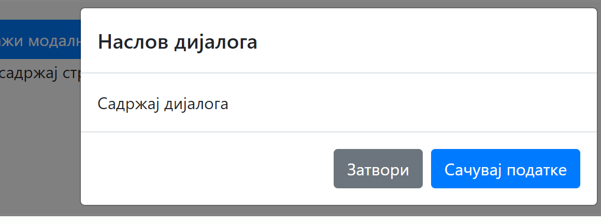

Bootstrap подршка компонентама¶
Погодним стилизовањем и распоређивањем већ познатих HTML елемената можемо да градимо сложеније функционалне целине, као што су табови, менији, галерије слика, картице, формулари и слично. Такве функционалне целине се често и визуелно издвајају на веб-странама и лако се уочавају. Ове визуелне и функционалне целине називамо компонентама на веб-страни.
Компоненте могу бити:
Основне компоненте, које представљају стандардне HTML елементе као што су поља за унос, листе или табеле.
Сложене компоненте, које градимо користећи једну или више једноставнијих компоненти. Груписањем компоненти на неки од уобичајених начина добијамо поменуте често коришћене конструкције (табови, менији, галерије слика, картице, итд.).
Једна од највећих вредности Bootstrap библиотеке је могућност једноставног стилизовања и мењања стила често коришћених компоненти, што смо већ имали прилике да видимо. Када желите да упознате ефекте појединих стилова основних компоненти као што су табеле или поља за унос, треба само да пронађете стил који вас интересује, копирате пример HTML кôда и ставите га у своју страну. Ако вам стил одговара и желите да га употребите, у великом броју случајева ће бити довољно само да промените садржај у компоненти.
Поред конзистентног стилизовања основних компоненти, у Bootstrap библиотеци можемо наћи неке врло корисне стилове за формирање сложених компоненти. У наставку ће бити описане неке од сложених компоненти које можемо једноставно дизајнирати помоћу ове библиотеке.
Навигационе траке¶
Навигационе траке (Navbar, скраћено од енгл. navigation bar) су компоненте које се налазе на врху стране и садрже меније, логое и поља за претрагу која се виде на многим веб-странама.
Пример навигационе компоненте дат је следећим HTML кôдом:
Из примера видимо да је навигациона линија HTML елемент који се зове <nav>, а са којим смо се упознали у секцији о распореду елемената. Да би <nav> елемент изгледао као навигациона линија са слике, потребно је доделити му класу navbar. Класа bg-light додаје позадинску боју и можете пробати у примеру како би изгледало са класaма navbar-dark bg-dark.

Вежба
Прочитајте више о навигационим тракама на веб-страни Bootstrap Navbar.
Измените претходни пример да прикаже Петљин лого уместо текста „Лого“.
Страничење¶
Страничење (енгл. pagination) је често коришћена компонента која се ставља на странама где се не приказују сви резултати, него је потребно, преласком на следећу страну, приказати нови скуп резултата. Пример једне компоненте за страничење која омогућава да се пређе на претходну или следећу страну или да се директно пређе на прву, другу или трећу страну је приказана је следећим примером:
Као што видимо, у HTML треба у <nav> елемент поставити листу <ul> и додати одговарајуће CSS класе као што су pagination и page-item, чиме се добија стилизована контрола за страничење резултата.
Додељивањем класа disabled и active стилизују се везе да изгледају онемогућено или активно.
Вежба
Прочитајте више о страничењу на веб-страни Bootstrap - Pagination.
Измените горњи пример тако да:
компонента буде умањена,
текст за претходну или следећу страну замените иконама
«и».
Картице¶
Картице (енгл. Cards) су компоненте помоћу којих издвајамо независне целине у садржају. Често је главна функционалност картице да омогући везу ка другој веб-страни. При томе, за разлику од обичног линка, картица може да садржи више елемената, као што су наслов, слика, краћи текст о страни на коју упућује, дугме које води ка тој страни итд.
HTML кôд компоненте картице је приказан у следећем примеру:
Из датог примера видимо како можемо да направимо картицу: у један <div> блок постављамо HTML елементе за наслов (таг <h5>), пасус текста (таг <p>) и линк (таг <а>), уз одговарајуће CSS класе. У овом примеру, линк је помоћу класе btn btn-primary стилизован као дугме.
Вежба
Прочитајте више о картицама на веб-страни Bootstrap Cards.
Замените дугме на дну картице са два линка:
Линк „Такмичење“ који везује ка Петљиној веб-страни која се налази на локацији https://petlja.org/takmicenja,
Линк „Форум“ који везује ка Петљиној веб-страни која се налази на локацији https://petlja.org/zbornica.
Дијалози¶
Једна од најчешће коришћених компоненти у веб-апликацијама је дијалог који приказује формулар или текст. Дијалог се приказује преко осталих компоненти, док је остатак стране затамњен и неактиван.
{kind=link}
Уз помоћ Bootstrap библиотеке се дијалог и дугме које га отвара лако имплементирају у HTML кôду у неколико корака.
Дугмету које отвара дијалог потребно је доделити:
атрибут
data-bs-toggleса вредношћуmodal,атрибут
data-bs-targetса вредношћу идентификатора дијалога.
Потом је у наставку потребно додати HTML кôд којим се представља садржај дијалога, који ће бити приказан када се притисне дугме. Овај елемент мора да има вредност идентификатора која се слаже са вредношћу из атрибута data-bs-target дугмета које покреће дијалог.
У <div> блок који представља садржај дијалога се могу додати различити елементи којима ће се направити бољи изглед дијалога. На пример, ако се дода <div> са класом modal-header, садржај у њему ће се приказати као заглавље унутар дијалога. Садржај у <div> блоку са класом modal-footer ће се приказати на дну дијалога. На овај начин се веома лако може направити изглед дијалога који вам је потребан.
Више о дијалозима можете прочитати на веб-страни Bootstrap Modal.

У претходним примерима нисмо укључивали Bootstrap JavaScript библиотеку јер смо користили само CSS класе.
Дијалог захтева укључивање Bootstrap JavaScript библотеке да би атрибути data-bs-toggle и data-bs-target били повезани.
Закључак¶
У овој лекцији сте могли да видите неколико уграђених компоненти и кôд који треба да ставите у страну како би те компоненте биле приказане. Могућност да једноставно ископирате компоненте и слажете их у веб-страну су једна од највећих олакшица у библиотеци Bootstrap.
Компоненте приказане у лекцијама су само део Bootstrap библиотеке. На Bootstrap веб-страни прођите кроз све компоненте које су део библиотеке, пошто ће вам користити да знате да нека компонента постоји у случају да приметите да вам је потребна на веб-страни.